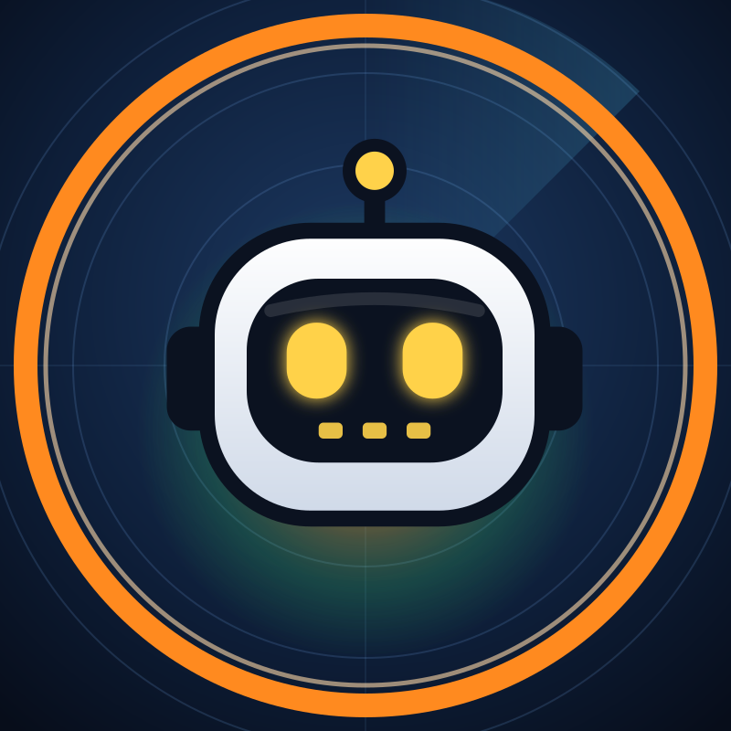

Streaming on YouTube
A weather chat bot that's on the air.
FRED watches the sky around the clock, talks through what's happening, and answers when you ask him something.
Watch @FredWeatherAI Go to the live stream
FRED watches the sky around the clock, talks through what's happening, and answers when you ask him something.
Watch @FredWeatherAI Go to the live stream